Lists of curated books
Links and PDFs when available are provided by the Authors.
All materials are copyrighted and protected.
We encourage you to buy the final shipped books to support Authors and Publishers.
- Textbooks available online with resources (eg., slides/code/exercises):
- 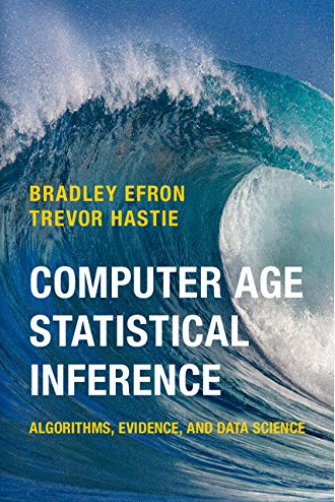
Computer Age Statistical Inference:
Algorithms, Evidence and Data Science by Efron and Hastie, Cambridge University Press, 2016
PDF
- 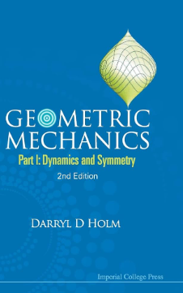
Geometric Mechanics
Part I: Dynamics and Symmetry, by Darryl D Holm,
Imperial College London, 2011

PATTERNS, PREDICTIONS, AND ACTIONS:
A story about machine learning, by Moritz Hardt and Benjamin Recht, Princeton University Press, 2022.
- 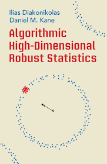
Algorithmic High-Dimensional Robust Statistics
by Ilias Diakonikolas and Daniel M. Kane, Cambridge University Press, 2023
CUP book page

Reinforcement Learning: An Introduction
by Richard S. Sutton and Andrew G. Barto, Second Edition,
MIT Press, 2018
Book web page: http://incompleteideas.net/book/the-book.html

Machine Learning: A First Course for Engineers and Scientists
by A. Lindholm, N. Wahlström, F. Lindsten, and Th. Schön.
Book web page: http://smlbook.org
include Neural networks, deep learning, bagging, boosting, Bayesian ML, Gaussian process, generative models, and more!
- 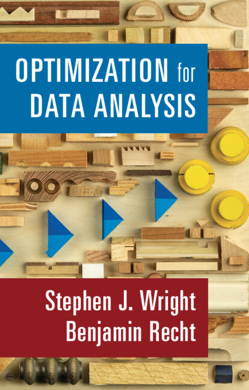
Optimization for Modern Data Analysis
by Benjamin Recht and Stephen J. Wright.
Book web page
https://people.eecs.berkeley.edu/~brecht/opt4ml_book/
-
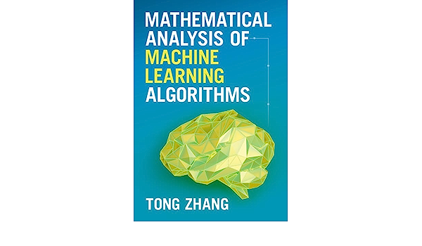
Mathematical Analysis of Machine Learning Algorithms
by Tong Zhang (Hong Kong University of Science and Technology)
Book web page
https://tongzhang-ml.org/lt-book.html
-
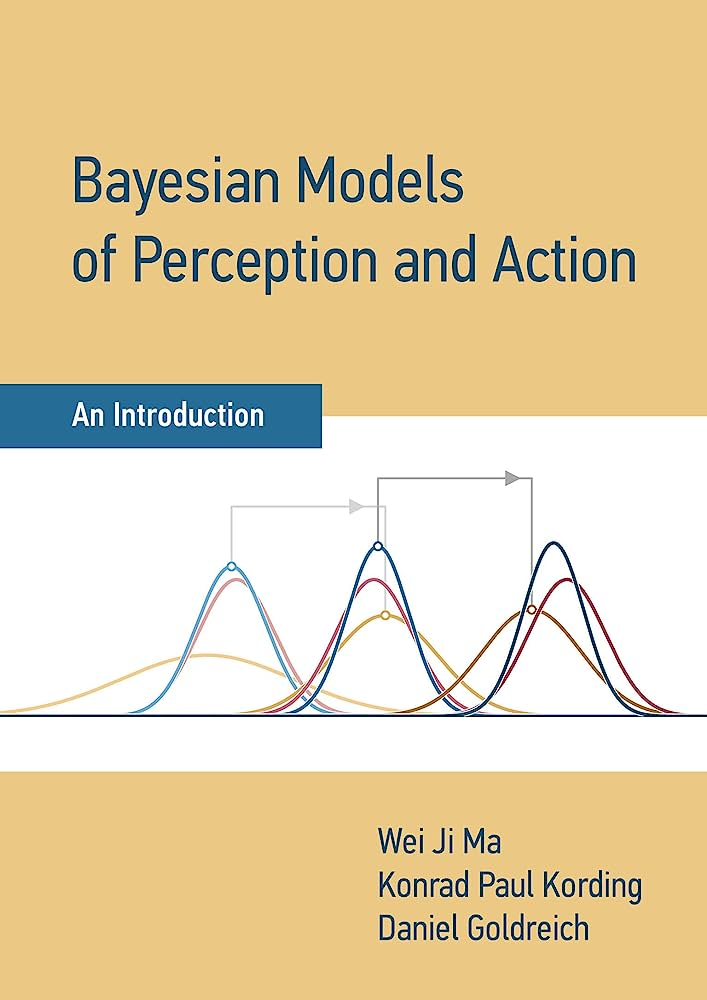
Bayesian models of perception and action
by Wei Ji Ma, Konrad Kording, and Daniel Goldreich
Book web page
https://www.cns.nyu.edu/malab/bayesianbook.html

by Wright & Ma
Book
https://book-wright-ma.github.io/Book-WM-20210422.pdf

Bayesian Reasoning and Machine Learning by D. Barber
Book http://web4.cs.ucl.ac.uk/staff/D.Barber/pmwiki/pmwiki.php?n=Brml.HomePage

Bayesian Modeling
and Computation in Python by Osvaldo Martin , Ravin Kumar and Junpeng Lao
Book
https://bayesiancomputationbook.com/welcome.html
- 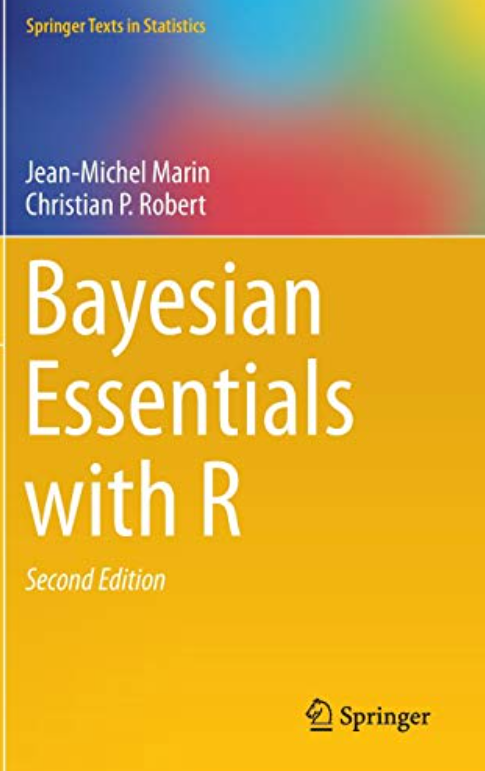
Solution manual to Bayesian
Essentials with R
Publisher book web page:
https://link.springer.com/book/10.1007/978-1-4614-8687-9
R code package:
https://cran.r-project.org/web/packages/bayess/index.html
- 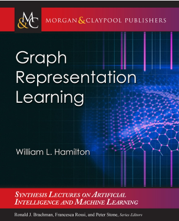
Graph Representation Learning by W. L. Hamilton (2023), Morgan & Claypool publisher.
- 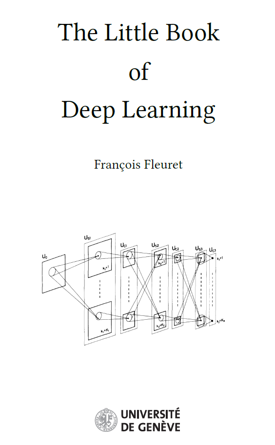
The Little Book
of
Deep Learning (about 160 pages) by François Fleuret (2023), University of Geneva, CH.

Understanding Deep Learning (about 540 pages) by Simon J.D. Prince (2023), to be published by MIT Press.
Algorithms by Jeff Erickson (revised, 2015).
- 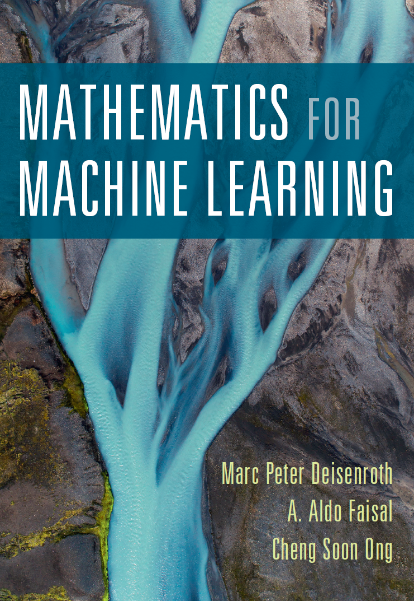
Mathematics for Machine Learning by
Marc Peter Deisenroth, A. Aldo Faisal, and Cheng Soon Ong, Cambridge University Press.
- 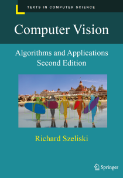
Computer Vision: Algorithms and Applications by
Richard Szeliski, Springer.

Information theory, inference and learning algorithms by Sir MacKay,
combines Information Theory with Machine Learning
Book web page:
https://inference.org.uk/itila/book.html
An Introduction to Statistical Learning with Applications in R,ISLR, 2nd edition,
by James, Witten, Hastie, and Tibshirani
Book web page: https://statlearning.com
Mining of Massive Datasets by Jure Leskovec, Anand Rajaraman, Jeff Ullman,
3rd Ed, Cambridge University Press.
Book web page: http://mmds.org

The Elements of Statistical Learning: Data Mining, Inference, and Prediction
by Trevor Hastie, Robert Tibshirani and Jerome Friedman
Book web page:
https://hastie.su.domains/ElemStatLearn/

High-Dimensional Probability: An Introduction with Applications in Data Science
by Prof. Roman Vershynin with 41 very nice hand-written notes and videos (and homeworks) which explains most contents of the book:
Book web page:
https://math.uci.edu/~rvershyn/teaching/hdp/hdp.html
- 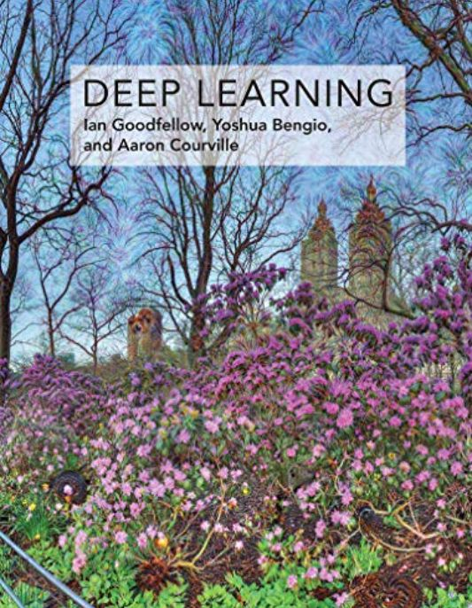
Deep Learning by
Ian Goodfellow, Yoshua Bengio, Aaron Courville, MIT Press
Book web page:
https://deeplearningbook.org
Statistical inference by minimum divergence:
-
Minimum Divergence Methods in Statistical Machine Learning
From an Information Geometric Viewpoint
by Shinto Eguchi, Osamu Komori, Springer, 2022
 New Developments in Statistical Information Theory Based on Entropy and Divergence Measures
by Leandro Pardo (Ed), MDPI Entropy, 2019
New Developments in Statistical Information Theory Based on Entropy and Divergence Measures
by Leandro Pardo (Ed), MDPI Entropy, 2019
book pdf
-
N-distances and Their Applications
by Lev B. Klebanov,
Karolinum Press, Charles University, 2006.
book pdf
-
The Methods of Distances
in the Theory of Probability and Statistics
by Svetlozar T. Rachev, Lev B. Klebanov, Stoyan V. Stoyanov, Frank Fabozzi, Springer, 2013
-
Statistical Inference:
The Minimum Distance Approach
by Ayanendranath Basu, Hiroyuki Shioya, Chanseok Park, CRC Press, 2011
-
A Probability Metrics Approach to Financial Risk Measures
by Svetlozar T. Rachev, Stoyan V. Stoyanov, Frank J. Fabozzi, Wiley-Blackwell, 2011
-
Statistical Inference
Based on Divergence Measures
by Leandro Pardo, CRC Press, 2006
-
Model Selection and Multimodel Inference: A Practical Information-Theoretic
Approach
by Burnham KP, Anderson DR, Springer, 2002 (2nd Edition)
-
Probability Metrics and the Stability of Stochastic Models
by Svetlozar T. Rachev, Wiley, 1991
-
Goodness-of-Fit Statistics for Discrete Multivariate Data
by Timothy R.C. Read, Noel A.C. Cressie, Springer Series in Statistics, 1988
(power divergence statistic)
- 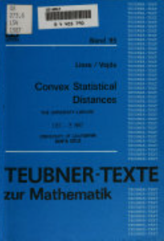
Convex Statistical Distances
by Friedrich Liese, Igor Vajda, Teubner Press, 1987
High-dimensional probability and statistics (including high-dimensional covariance matrices):
 Fundamentals of High-Dimensional Statistics:
With Exercises and R Labs
by Johannes Lederer, Springer 2022
Fundamentals of High-Dimensional Statistics:
With Exercises and R Labs
by Johannes Lederer, Springer 2022
-
High-Dimensional Statistics:
A Non-Asymptotic Viewpoint
by Martin J. Wainwright, Cambridge University Press, 2019
 High-Dimensional Probability:
An Introduction with Applications in Data Science
by Roman Vershynin, Cambridge University Press, 2018
High-Dimensional Probability:
An Introduction with Applications in Data Science
by Roman Vershynin, Cambridge University Press, 2018
-
Statistics for High-Dimensional Data:
Methods, Theory and Applications
by Peter Bühlmann, Sara van de Geer, Springer 2011
-
High Dimensional Probability, Editors: Ernst Eberlein, Marjorie Hahn, Michel Talagrand,
conference proceedings, Springer, 1998
-
Analysis of Multivariate and High-Dimensional Data
by Inge Koch, Cambridge University Press, 2014
-
High-Dimensional Covariance Estimation: With High-Dimensional Data
by Mohsen Pourahmadi, Wiley, 2013
-
Large Sample Covariance Matrices and High-Dimensional Data Analysis
by Jianfeng Yao, Shurong Zheng, Zhidong Bai, Cambridge University Press, 2015
,
 Introduction to High-Dimensional Statistics
By Christophe Giraud, Chapman & Hall, Routledge, 2021 (second edition)
Introduction to High-Dimensional Statistics
By Christophe Giraud, Chapman & Hall, Routledge, 2021 (second edition)
pdf
Optimal transport (Wasserstein distances, Sinkhorn algorithm/divergence):
 Computational Optimal Transport: With Applications to Data Science
by Gabriel Peyré and Marco Cuturi (2019), Now Publishers
Computational Optimal Transport: With Applications to Data Science
by Gabriel Peyré and Marco Cuturi (2019), Now Publishers
 Optimal Transport:
Old and New by Cédric Villani (2009), Springer
Optimal Transport:
Old and New by Cédric Villani (2009), Springer
-
Optimal Transport
for Applied Mathematicians: Calculus of Variations, PDEs and Modeling
by Filippo Santambrogio (2015), Birkhäuser
 Topics in Optimal Transport
by Cédric Villani (2003), AMS
Topics in Optimal Transport
by Cédric Villani (2003), AMS
-
Lectures on Optimal Transport
by
Luigi Ambrosio, Elia Brué, Daniele Semola (2021), Springer
-
An Invitation
to Optimal Transport, Wasserstein Distances,
and Gradient Flows by
Alessio Figalli and Federico Glaudo (2021), EMS Textbooks in mathematics
 Optimal transport methods in economics
by Alfred Galichon (2017), Princeton Press
Optimal transport methods in economics
by Alfred Galichon (2017), Princeton Press
 Model-free Hedging
A Martingale Optimal Transport Viewpoint by
Pierre Henry-Laborderehttps (2017), Chapman & Hall, CRC
Model-free Hedging
A Martingale Optimal Transport Viewpoint by
Pierre Henry-Laborderehttps (2017), Chapman & Hall, CRC
-
Sub-Riemannian Geometry and Optimal Transport by
Ludovic Rifford (2014), Springer
 Optimal Transport: Theory And Applications,
(London Mathematical Society Lecture Note Series, Series Number 413),
Yann Ollivier, Hervé Pajot, Cédric Villani(2014)
Optimal Transport: Theory And Applications,
(London Mathematical Society Lecture Note Series, Series Number 413),
Yann Ollivier, Hervé Pajot, Cédric Villani(2014)
Algebraic statistics:
Field
which considers computational algebra, algebraic geometry, and combinatorics among others to tackle problems in statistics.
-
Algebraic Statistics
by Seth Sullivant, AMS, 2018
-
Algebraic Statistics:
Computational Commutative Algebra in Statistics
by Giovanni Pistone, Eva Riccomagno, and Henry P. Wynn, Chapman & Hall, 2000
-
An Introduction to Algebraic Statistics with Tensors
by Cristiano Bocci and Luca Chiantini, Springer, 2019
-
Markov Bases in Algebraic Statistics
by Satoshi Aoki, Hisayuki Hara, and Akimichi Takemura, Springer, 2012
-
Semialgebraic Statistics
and Latent Tree Models
by Piotr Zwiernik, Chapman & Hall, 2016
-
Algebraic Statistics
for Computational Biology
by L. Pachter and B. Sturmfels (Editors), Cambridge University Press, 2005
 Lectures on Algebraic Statistics
by Mathias Drton, Bernd Sturmfels, Seth Sullivant, Springer, 2009
Lectures on Algebraic Statistics
by Mathias Drton, Bernd Sturmfels, Seth Sullivant, Springer, 2009
-
Algebraic Geometry and Statistical Learning Theory
by Sumio Watanabe, Cambridge University Press, 2009
Computational topology:
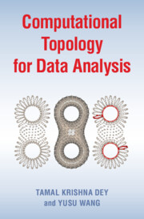
Computational Topology for Data Analysis
by Tamal Krishna Dey, Purdue University, Indiana, Yusu Wang, University of California, San Diego
Cambridge University Press, 2022
Last updated, Frank Nielsen, July 2023.